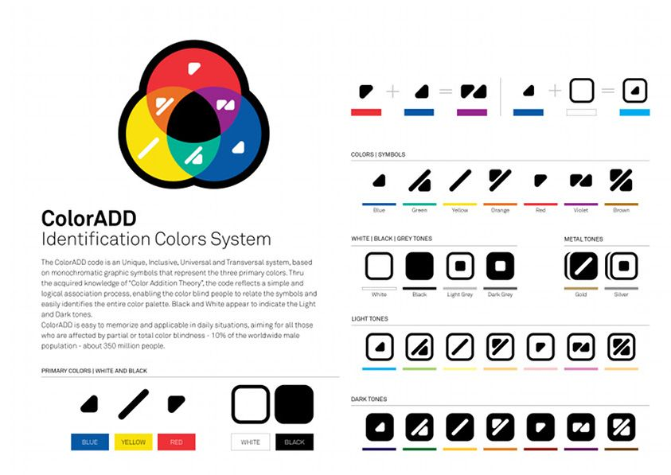

Colorpop
Board Game Arena 官方规则文档
The game
Select a group of connected tokens of the same color to pop them. (Tokens are only connected orthogonally, not diagonally.) You must pop at least two tokens per turn - singles can't be popped. White tokens are wild and can be used as any color; you must select another color along with white.
The goal is to have none of your secret color tokens remaining on the board: if this happens you win instantly. Otherwise, the game ends when there are no longer any tokens that can be popped, at which point the player with the least remaining of their color on the board wins. (Ties go to the player who popped the fewest tokens of their own secret color.)
It is important to note having popped the most of your own color is not a winning condition.
When a column is emptied, all of the columns are slid together to close the gap.
Variants
Two secret colors: this variant allows you to play Color Pop with two secret colors, which will have you thinking very often on which color you are gonna favor this turn! This variant is only available for two player games.
Game preferences
The colorblind option available for this game enables an alternative setup displaying symbols on the tokens using the great color code designed by Miguel Neiva: ColorADD.
Learning the code is easy, just take a look at the following synthesis panel:

Have a good game!